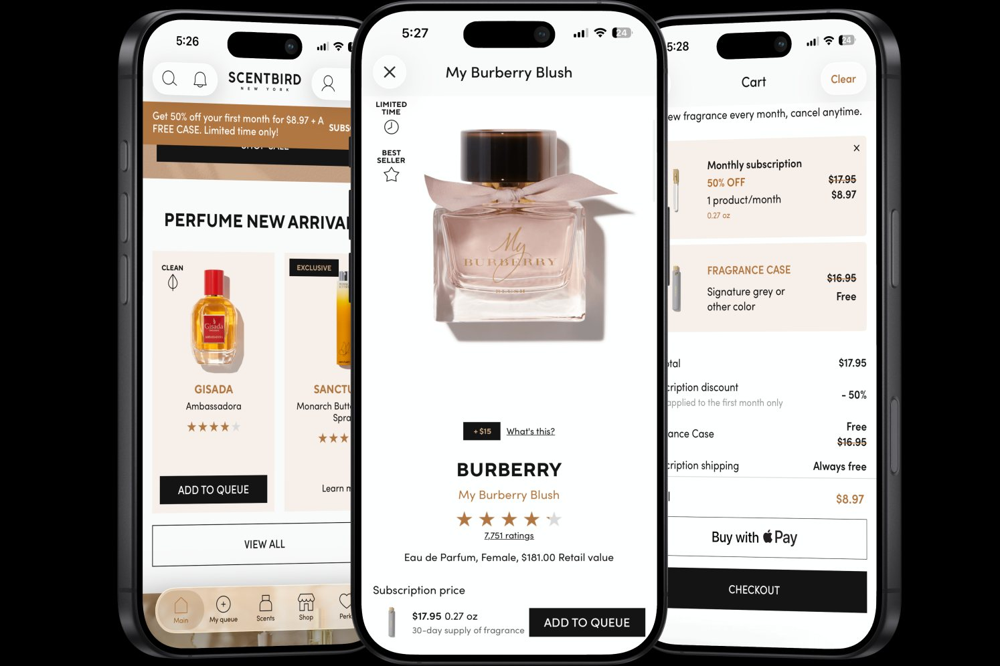
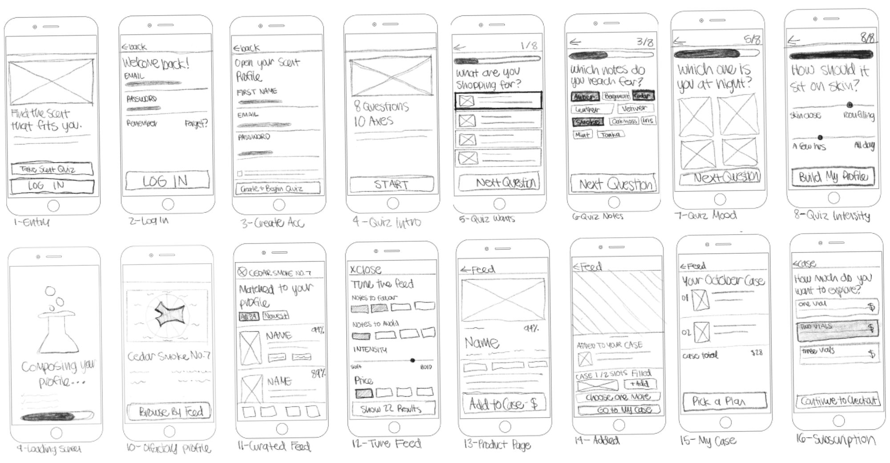
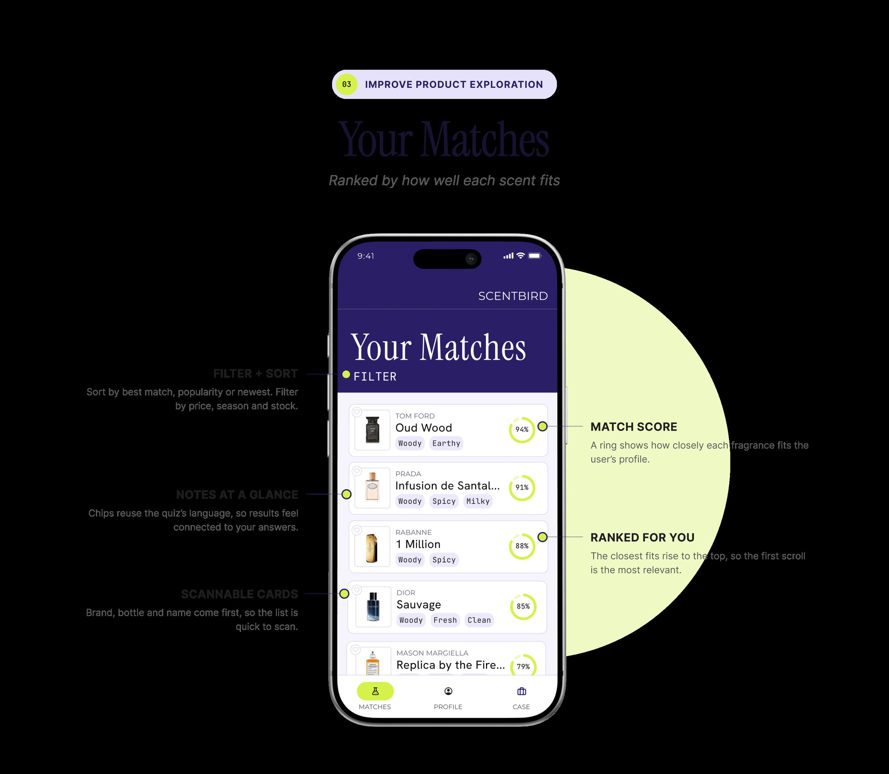

Scentbird App Redesign
A redesign of the Scentbird iOS app that helps people find a scent that feels like theirs, and feel confident subscribing to it.
- Role
- UI/UX design
- Tools
- Figma
Scentbird is a fragrance discovery and subscription service that allows users to explore a large collection of perfumes, receive personalized recommendations, and select fragrances for monthly delivery. The iOS app combines fragrance discovery, personalization, product browsing, and subscription management into one experience.
I chose Scentbird because its concept has a lot of potential as a discovery experience, but the current app does not fully capture what makes fragrance distinctive and personal. Fragrance is strongly connected to memory, identity, beauty, mood, and specific moments, yet it is an invisible medium that is difficult to communicate through a screen. My redesign explores how Scentbird could turn fragrance discovery into a more immersive and personalized experience, allowing users to explore different scents, understand their preferences, and curate a scent identity that feels uniquely theirs.
- Problem statement and project goals
- Research and key insights
- Persona, journey map and user flow
- Low-fi and digital wireframes
- Style guide
- High-fidelity screens and interactive prototype
Where the current app creates friction
I analyzed the existing app alongside App Store and Google Play reviews and fragrance-community discussions, focusing on how users discover fragrances, evaluate recommendations, and manage their subscription. Three things kept coming up: discovery feels like a catalog, picks don't explain themselves, and the plan is hard to read.

Low-fi first
Low-fidelity wireframes settled the structure of the quiz, profile, matches and case before I moved on to digital wireframes and the style guide.

The quiz asks about feelings instead of fragrance jargon. Each question explains itself in one line, familiar notes like citrus and amber anchor each end of the scale, and a live result card updates as you drag to describe how that mix will smell. Eight segments fill in as you go so the quiz never feels endless, and answers save at every step.
The scent profile makes taste visible. A scent wheel plots eight fragrance families as one shape, results lead with a named scent family instead of a list of products, and any answer can be edited later, with matches refreshing to reflect it. Navigation stays to three tabs: Matches, Profile and Case.
Matches are ranked by how well each scent fits, with a ring showing the match score, notes as chips that reuse the quiz's language, and filters for price, season and stock. The fragrance detail adds context before commitment: a one-line reason it matches, vial size translated into about 30 days of wear, key notes and similar scents.

